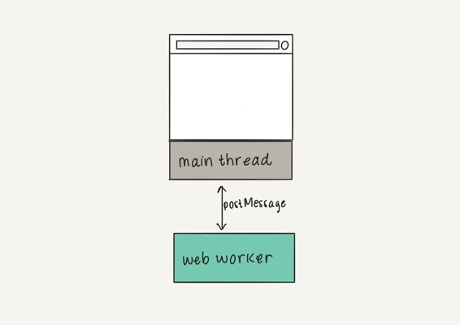
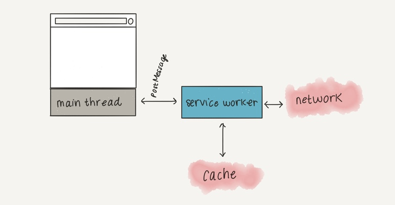

Angular CLI 8 提供建立 web worker 的指令，這一個指令能幫助我們建立相關的檔案及修正相關要調整的設定，剩下的就是功能實作及在何處使用 web worker 了。
Web worker 是什麼? 我們都知道 JavaScript 基本上是一個單執行緒的語言，web worker 可以讓我們多開一條執行緒，這樣子的好處就是可以將高計算的工作放到 worker 內運算，善用現代電腦的強大硬體。
概述
Web Worker 一旦被建立起來後，就會一直運行，所以在使用上要留意關閉的時機點，避免資源浪費，Web Worker 可以讓我們多開戰場，但還是有其使用上的限制，有以下幾點需要留意的
- 必須來至相同的網址: web worker 的程式不能跨網域的讀取
- DOM操作限制:
- 不能使用:
doucment、window、parent物件 - 可以使用:
navigator、location
- 不能使用:
- 溝通:
Worker與Main Thread不能直接溝通，必須透過Message來溝通 - 腳本限制: 不能使用
alert()和confirm()但可以使用XMLHttpRequest - 檔案限制: 不能讀取本機檔案 (
file://)，但可以讀取網路上的
基本用法
Main Thread
建立
1 | const worker = new Worker('worker.js') |
傳遞訊息
1 | worker.postMessage(data); |
postMessage 就是 Main Thread 與 Worker 間傳遞訊息的方法
接受訊息
1 | worker.onmessage = (event)=> { |
關閉
1 | worker.terminate(); |
Worker 例外狀況處理
1 | worker.onerror = (error)=>{ |
Worker
接受訊息
1 | addEventListener('message', ({ data }) => { |
傳送訊息
1 | postMessage(data); |
透過 postMessage 的方法可以從 worker 傳送訊息到 Main Thread
引用 Library
在 worker 內一樣可以使用 JavaScript Library, 引用方式如下
1 | importScripts('script.js'); |
錯誤處理
1 | addEventListener('error', function (event) { |
關閉
Worker 也可以自我關閉
1 | close(); |
Angular 用法
建立 worker 檔案
透過 Angular CLI 可以快速的建立及設定相關的環境，指令是
1 | ng g webWorker <worker-name> |
該指令會做以下的幾件事情
- 新增
<worker-name>.worker.ts檔案 - 新增
tsconfig.worker.json檔案 - 更新
tsconfig.app.json檔案，排除worker.ts檔案 - 更新
angular.json檔案，新增讀取 worker 相關的設定
使用 Web Worker
在 Angular 內不論是 component 或是 service 都可以使用，基本使用方式為
1 | if (typeof Worker !== 'undefined') { |
- line 2: 建立 worker，第二個參數可以設定以下的項目 (Optional)
- type: 指定建立的類型， 預設為
classic，可設定的選項是classic和module- 設定為
module類型時 ，可以使用import {} from xxx語法
- 設定為
- credentials: 指定
credentials類型，可設定的選項有omit、same-origin、include，如果type的設定為classic時，此設定為omit(不需要 credentials) - name: 設定 workder 名稱，通常使用於 Debugging 時期 (IE、Safari 不支援)
- type: 指定建立的類型， 預設為
- line 5~12: 兩種監聽
Worker傳回訊息的方式- 基本寫法
- 使用 rxjs 的方式
- line 15: 送訊息到 worker
應用範例
假設我想要做一個定期撈資料的功能，這一個功能雖然可以在 service 內寫 timer 定期去完成。如果想要放到 web worker 內，又該如何完成了，又不能再 web worker 內使用 httpClient 的物件。
這裡有幾個選擇，既然可以使用 import 的方式載入第三方的套件，這裡就用 rxjs 內的 ajax 物件來做示範
- my.worker.ts
1 | /// <reference lib="webworker" /> |
- app-component.ts
1 | import { Component, OnInit } from '@angular/core'; |
Web Worker 與 Service Worker 的差異
以下兩張圖快速解釋 Web Worker 與 Service Worker 各自負責的事情
Web Worker

Service Worker
